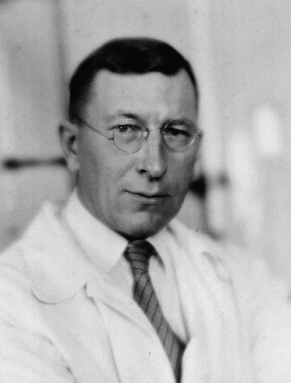

Un extracto del páncreas arranca a la muerte a un niño diabético en Toronto
En el Hospital General de Toronto se ha inyectado hoy por primera vez a un ser humano un extracto del páncreas, obra de los doctores Banting y Best, para vencer la diabetes que consume a un niño de catorce años. La primera dosis, todavía impura, bajó algo el azúcar de la sangre, mas no logró aún la curación. Se prepara un extracto más puro del que todo se espera.

En una sala del Hospital General de Toronto yace desde hace semanas un muchacho de catorce años, Leonard Thompson, consumido por esa forma implacable de la diabetes que ataca a los niños. Reducido casi al esqueleto, alimentado con las dietas de hambre que son hoy el único recurso de los médicos, el enfermo se apagaba sin remedio. Esta tarde se ha ensayado en él algo que jamás se había probado en persona alguna: la inyección de un extracto obtenido del páncreas de un animal, preparado en los laboratorios de esta universidad. Los médicos que velan su cama aguardan ahora, hora tras hora, la respuesta de esa sangre envenenada de azúcar.
El extracto es fruto del trabajo tenaz de un cirujano joven, el doctor Frederick Banting, y de un estudiante, Charles Best, que durante meses, en un laboratorio cedido por el profesor Macleod, ligaron y machacaron páncreas de perro buscando aislar la sustancia que gobierna el azúcar del cuerpo. La primera inyección, según trasciende, ha hecho descender algo el azúcar de la sangre del muchacho, señal de que la vía es buena; mas el preparado resultó todavía impuro y el alivio, incompleto, con reacción en el sitio de la punción. No cantan victoria: el químico Collip afina ya una purificación más fina, de la que esperan un extracto digno de confianza.
Para entender la esperanza y la cautela conviene decir qué es hasta hoy la diabetes en un niño. Es, sin rodeos, una sentencia de muerte. El cuerpo pierde el gobierno del azúcar, que se acumula en la sangre y se derrama por la orina mientras la carne se deshace; el único modo de prolongar la vida es un régimen de inanición que apenas retrasa el final, dejando al enfermo esquelético y sin fuerzas. Generaciones de médicos han buscado en vano el resorte de este mal. Se sabía que el páncreas guardaba la llave, pero nadie había logrado extraer de él, sin destruirla, la sustancia que a estos cuerpos les falta.
En los pasillos del hospital se respira esa tensión de las cosas que se estrenan. Los padres del muchacho han dado su consentimiento a un remedio que nadie garantiza, movidos por la única certeza de que sin él la muerte es segura. Cuentan que los médicos vigilan al enfermo con un cuidado extremo, midiéndole el azúcar a cada paso, atentos a cualquier señal, buena o mala. No faltan en la profesión los escépticos, que recuerdan cuántos remedios milagrosos contra este mal se anunciaron para quedar en nada, y que aconsejan no despertar en las familias de tantos diabéticos una esperanza que pudiera luego resultar cruel.
¿Estamos ante el remedio tanto tiempo buscado? El diario no se atreve a proclamarlo, y hace bien en contenerse: una primera inyección imperfecta no vence a una enfermedad que ha derrotado a la medicina entera. Pero si los ensayos que ahora se preparan confirman lo que este primero deja entrever, que es posible devolver desde afuera al cuerpo la sustancia que le falta, entonces habrá que escribir que en Toronto, este invierno, empezó a torcerse un destino que se creía inapelable. Miles de familias que hoy velan a un hijo condenado tienen puestos los ojos, sin saberlo, en esta cama de hospital. Ojalá la ciencia no defraude tanta espera.